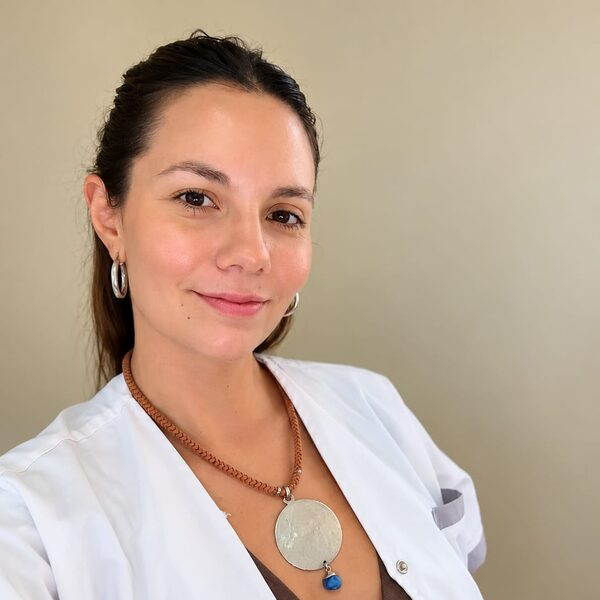
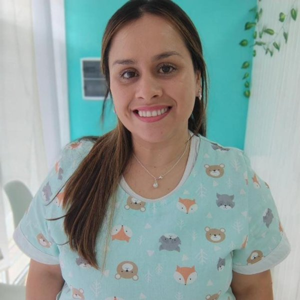

Practicante del Psicoanálisis. Comenzar un análisis puede ser hacer, de aquello que se repite y se padece, una pregunta.
- Infancias
- Adolescencias
- Pareja y vínculos
Villa Ángela concentra hoy la mayor parte de ARANDU. Acá vas a encontrar psicólogas, psicólogos y otros profesionales de la salud mental y el desarrollo que atienden en consultorio en la ciudad y, en muchos casos, también online.
13 profesionales · 13 con atención online · Disciplinas: Fonoaudiología, Psicología, Psicopedagogía.

Practicante del Psicoanálisis. Comenzar un análisis puede ser hacer, de aquello que se repite y se padece, una pregunta.
Terapia cognitivo-conductual para adolescentes y adultos: ansiedad, estrés, depresión, autoestima y habilidades sociales.

Acompaño a adolescentes, adultos y parejas en procesos de autoconocimiento, bienestar emocional y vínculos más saludables, incluyendo el abordaje de la sexualidad.

Terapia cognitiva para niños, adolescentes y adultos. También realizo evaluaciones psicológicas, aptos psicológicos y psicodiagnósticos.

Terapia cognitiva: un espacio de escucha y reflexión, sin juicios, para revisar pensamientos, emociones y conductas y encontrar nuevas formas de afrontar lo que preocupa.
Psicoterapia para infancias, adolescentes y jóvenes. Un espacio seguro y humano para tu proceso.

Psicóloga especializada en salud y bienestar laboral: estrés, burnout, ansiedad y transiciones profesionales. Creamos o reescribimos tu proyecto de vida según el momento que estés atravesando. Psicoterapia, mentorías, programas, cursos y consultorías.
Más de 15 años acompañando a niños, adolescentes y familias, con amplia experiencia en infancias y discapacidad. Tu bienestar emocional es una prioridad.
Psicoterapia para niños, adolescentes y adultos desde una mirada integral: un espacio de confianza y contención, con escucha activa y acompañamiento personalizado.
Fonoaudiología con orientación neurolingüística y en motricidad orofacial: lenguaje, habla, lectoescritura, respiración y deglución, desde la infancia hasta la adultez.
Terapia cognitivo-conductual para adolescentes y adultos: un espacio seguro y de confianza para darle sentido a lo que te pasa y encontrar nuevas formas de atravesarlo.
Terapia cognitivo-conductual con niños, adolescentes y adultos. Clínica infantojuvenil, orientación a familias, regulación emocional, duelo y crisis. También aptos psicológicos y psicodiagnóstico.

Psicopedagoga. Acompaño a niños, niñas, adolescentes y sus familias en sus procesos de aprendizaje: evaluaciones, acompañamiento de trayectorias escolares y talleres.
¿Buscás por motivo de consulta, profesión o atención online?
Ir al buscador completo